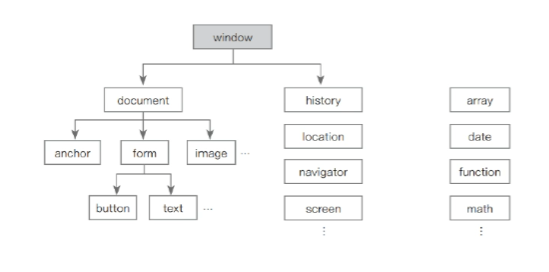
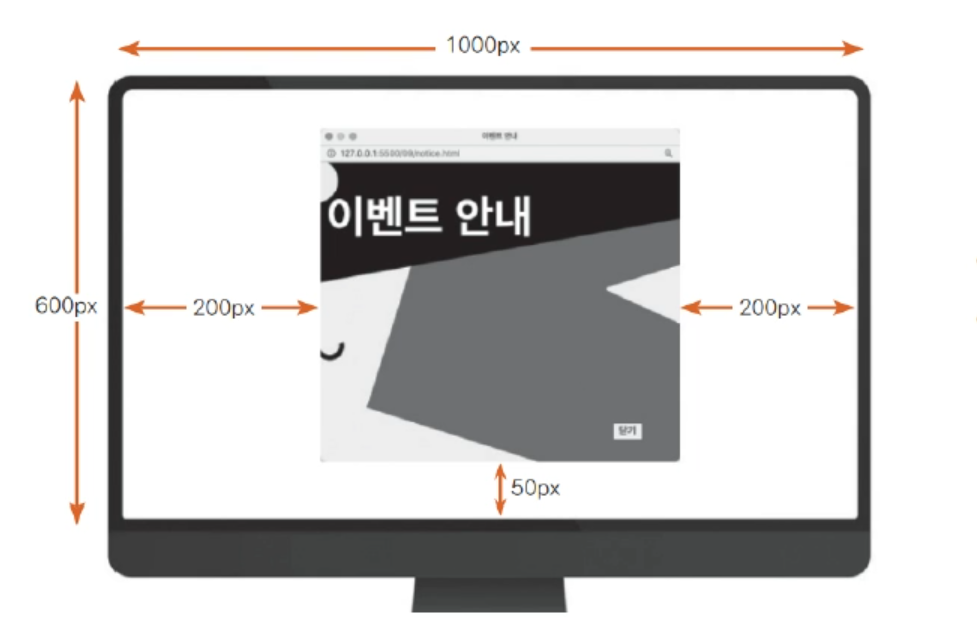
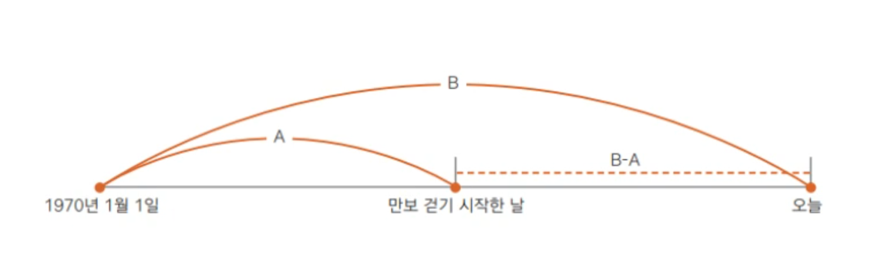

Chapter 8
Chapter 8 summary
최상위 객체, window
내장 객체란
- 사용자가 가져다 쓸 수 있도록 미리 만들어진 객체.
- 웹 브라우저에 웹 문서가 열리면 가장 먼저 window 객체가 만들어지고 하위에 웹 브라우저 요소에 해당하는 객체들이 만들어진다.
- window 객체를 비롯해 하위에 연결된 객체들은 모두 HTML 웹 API에 만들어진 객체들

window 객체
Window 객체는 웹 브라우저 창의 상태를 제어하는 객체
자바스크립트 객체 중 최상위이자 기본이 되는 객체
자바스크립트의 모든 객체는 Window 객체에 포함된다
Window 객체에는 웹 브라우저 창과 관련된 여러 가지 속성이 있다
Window 객체의 속성과 메서드에 접근하는 마침표(.)를 사용한다
window 객체의 주요 속성들
| 속성 |
설명 |
| document |
브라우저 창에 표시된 웹 문서에 접근할 수 있습니다. |
| frameElement |
현재 창이 다른 요소 안에 포함되어 있으면 그 요소를 반환합니다. 포함되어 있지 않으면 null을 반환합니다. |
| innerHeight |
내용 영역의 높이를 나타냅니다. |
| innerWidth |
내용 영역의 너비를 나타냅니다. |
| localStorage |
웹 브라우저에서 데이터를 저장하는 로컬 스토리지를 반환합니다. |
| location |
Window 객체의 위치/현재 URL을 나타냅니다. |
| name |
브라우저 창의 이름을 가져오거나 수정합니다. |
| outerHeight |
브라우저 창의 바깥 높이를 나타냅니다. |
| outerWidth |
브라우저 창의 바깥 너비를 나타냅니다. |
| 속성 |
설명 |
| pageXOffset |
스크롤했을 때 화면이 수평으로 이동하는 픽셀 수. scrollX와 같습니다. |
| pageYOffset |
스크롤했을 때 화면이 수직으로 이동하는 픽셀 수. scrollY와 같습니다. |
| parent |
현재 창이나 서브 프레임의 부모 프레임입니다. |
| screenX |
브라우저 창의 왼쪽 테두리가 모니터 왼쪽 테두리에서부터 떨어져 있는 거리입니다. |
| screenY |
브라우저 창의 윗쪽 테두리가 모니터 윗쪽 테두리에서부터 떨어져 있는 거리입니다. |
| scrollX |
스크롤됐을 때 수평으로 이동하는 픽셀 수를 나타냅니다. |
| scrollY |
스크롤됐을 때 수직으로 이동하는 픽셀 수를 나타냅니다. |
| sessionStorage |
웹 브라우저에서 데이터를 저장하는 세션 스토리지를 반환합니다. |
window 객체의 주요 메서드(함수)
- 대화 창을 표시하거나 브라우저 창의 크기나 위치를 알아내고 지정하는 등
- 웹 브라우저 창 자체와 관련된 것이 대부분
- 앞에서 사용했던 alert( ) 함수나 prompt( ) 함수도 window 객체의 함수
- 객체의 함수 표기법에 따르면 window.alert( ) 라고 입력해야 하지만, window.를 생략할 수도 있다.
| 함수 |
설명 |
| alert( ) |
알림 창(Alert Dialog)을 표시합니다. |
| blur( ) |
창에서 포커스를 제거합니다. |
| close( ) |
현재 열려 있는 창을 닫습니다. |
| confirm( ) |
[확인], [취소]가 있는 확인 창을 표시합니다. |
| focus( ) |
현재 창에 포커스를 부여합니다. |
| moveBy( ) |
현재 창을 지정한 크기만큼 이동합니다. |
| moveTo( ) |
현재 창을 지정한 좌표로 이동합니다. |
| open( ) |
새로운 창을 엽니다. |
| postMessage( ) |
다른 창으로 메시지를 전달합니다. |
| print( ) |
현재 문서를 인쇄합니다. |
| prompt( ) |
프롬프트 창에 입력 값을 반환합니다. |
| 함수 |
설명 |
| resizeBy( ) |
지정한 크기만큼 현재 창 크기를 조절합니다. |
| resizeTo( ) |
동적으로 브라우저 창의 크기를 조절합니다. |
| scroll( ) |
문서에서 특정 위치로 스크롤합니다. |
| scrollBy( ) |
지정한 크기만큼 스크롤합니다. |
| scrollTo( ) |
지정한 위치까지 스크롤합니다. |
| setCursor( ) |
현재 창의 커서를 변경합니다. |
| showModalDialog( ) |
모달 창을 표시합니다. |
| sizeToContent( ) |
내용에 맞게 창 크기를 맞춥니다. |
| stop( ) |
로딩을 중지합니다. |
팝업 창을 여는 open() 함수
open( ) 함수를 사용하면 현재 창이나 새 탭, 새로운 알림 창 등 다양한 형태로 새 창을 열 수 있다.
window.open(경로, 창 이름, 창 옵션)
- 경로: 팝업 창에 표시할 문서나 사이트의 경로(주소).
- 창 이름: 팝업 창의 이름. 이름을 지정하지 않으면 팝업 창이 계속 새로 나타난다.
- 창 옵션: left, top 속성을 사용해 위치를 정하거나 width, height 속성을 사용해 크기를 지정할 수 있다.
(위치를 지정하지 않으면 팝업 창은 화면의 맨 왼쪽 위에 나타남)
브라우저 창을 닫는 close() 함수
현재 열려 있는 브라우저 창을 닫는 함수
window.close()
08notice.html에 있는 ‘닫기’ 버튼 수정하기
<button>닫기</button>
<button onclick="window.close()">닫기</button>
screen 객체
사용자의 화면 크기나 방향 등의 정보를 담고 있는 객체
| 구분 |
속성/메서드 |
설명 |
| 프로퍼티 |
availHeight |
UI 영역(예를 들어 윈도우의 작업 표시줄이나 Mac의 독)을 제외한 영역의 높이를 나타냅니다. |
| availWidth |
UI 영역을 제외한 내용 표시 영역의 너비를 나타냅니다. |
| colorDepth |
화면에서 픽셀을 렌더링할 때 사용하는 색상 수를 나타냅니다. |
| height |
UI 영역을 포함한 화면의 높이를 나타냅니다. |
| orientation |
화면의 현재 방향을 나타냅니다. |
| pixelDepth |
화면에서 픽셀을 렌더링할 때 사용하는 비트 수를 나타냅니다. |
| width |
UI 영역을 포함한 화면의 너비를 나타냅니다. |
| 메서드 |
lockOrientation() |
화면 방향을 잠급니다. |
| unlockOrientation() |
화면 방향 잠금을 해제합니다. |
팝업 창, 화면 가운데 표시하기
팝업 창의 기본 위치는 화면의 왼쪽 위이므로 화면 가운데에 배치하려면 위치를 계산해야 한다.
예를 들어, 화면의 너비 1000px, 높이 600px, 팝업 창의 너비 500px, 높이 400px이라면?

- 팝업 창의 left = (화면 너비 − 팝업 창 너비) / 2
- 팝업 창의 top = (화면 높이 − 팝업 창 높이) / 2
08Wpopup-3.html, 08Wjspopup-3.js
const btnt = document.querySelector("button");
const popWidth = 600;
const popHeight = 500;
btnt.addEventListener("click", function() {
let left = (screen.availWidth - popWidth) / 2;
let top = (screen.availHeight - popHeight) / 2;
window.open("notice.html", "event", `width = ${popWidth} height= ${popHeight} left = ${left} top = ${top}`);
});
history 객체
- history 객체에는 브라우저에서 [뒤로]나 [앞으로] 또는 주소 표시줄에 입력해서 방문한 사이트 주소가 배열 형태로 저장된다.
- 브라우저 히스토리는 보안 문제 때문에 읽기 전용
| 구분 |
속성/메서드 |
설명 |
| 프로퍼티 |
length |
현재 브라우저 창의 history 목록에 있는 항목의 개수, 즉 방문한 사이트 개수가 저장됩니다. |
| 메서드 |
back() |
history 목록에서 이전 페이지를 현재 화면으로 불러옵니다 |
| forward() |
history 목록에서 다음 페이지를 현재 화면으로 불러옵니다 |
| go() |
history 목록에서 현재 페이지를 기준으로 상대적인 위치에 있는 페이지를 현재 화면으로 불러옵니다.
예를 들어 history.go(1)은 다음 페이지를 가져오고,
history.go(-1)은 이전 페이지를 불러옵니다.
|
location 객체
현재 문서의 URL 주소와 관련된 정보가 들어 있음
| 구분 |
속성/메서드 |
설명 |
| 프로퍼티 |
hash |
URL 중에서 #로 시작하는 해시 부분의 정보를 담고 있습니다. |
| host |
URL의 호스트 이름과 포트 번호를 담고 있습니다. |
| hostname |
URL의 호스트 이름이 저장됩니다. |
| href |
전체 URL입니다. 이 값을 변경하면 해당 주소로 이동할 수 있습니다. |
| pathname |
URL 경로가 지정됩니다. |
| port |
URL의 포트 번호를 담고 있습니다. |
| protocol |
URL의 프로토콜을 저장합니다. |
| password |
도메인 이름 앞에 username과 password를 함께 입력해서 접속하는 사이트의 URL일 경우에 password 정보를 저장합니다. |
| search |
URL 중에서 ?로 시작하는 검색 내용을 저장합니다. |
| username |
도메인 이름 앞에 username을 함께 입력해서 접속하는 사이트의 URL일 경우에 username 정보를 저장합니다. |
| 메서드 |
assign() |
현재 문서에 새 문서 주소를 할당해서 새 문서를 가져옵니다. |
| reload() |
현재 문서를 다시 불러옵니다. |
| replace() |
현재 문서의 URL을 지우고 다른 URL의 문서로 교체합니다. |
| toString() |
현재 문서의 URL을 문자열로 반환합니다. |
Date 객체
자바스크립트 내장 객체 중에서 Date 객체는 날짜와 시간에 대한 정보를 조절할 수 있는 객체.
현재 날짜와 시간을 홈페이지에 출력하거나 달력을 표시할 수도 있고,
특정일까지 얼마나 남았는지 카운트다운하는 등 여러 가지로 응용할 수 있다.
객체와 인스턴스
자바스크립트에 정의된 내장 객체를 사용할 때에는 객체의 프로퍼티와 메서드를 가진 새로운 객체를 만든 후
여기에 식별자를 붙여 프로그래밍에서 사용한다.
→ Date 객체를 사용하려면 자바스크립트의 Date 객체를 똑같이 만들어서 그것을 사용한다.
→ 이렇게 내장 객체와 똑같은 모양으로 찍어낸 객체를 인스턴스(instance) 객체라고 한다.
Date 객체의 인스턴스 만들기
1) 현재 날짜를 기준으로 인스턴스 만들기
new Date()
let today = new Date()
today
> let today = new Date()
< undefined
> console.log(today)
Thu Jul 29 2021 15:59:15 GMT+0900 (한국 표준시)
< undefined
today 변수에는 Date 객체의 인스턴스가 저장되었기 때문에
이제부터 today 변수는 Date 객체의 프로퍼티와 메서드를 사용할 수 있다
today.getDate()
> today.getDate()
29
2) 특정 날짜를 기준으로 인스턴스 만들기
Date 다음의 괄호 안에 날짜 정보 입력
(예) ‘2025년 2월 25일’이라는 날짜 정보를 객체에 저장한 후 프로그램에 사용하려면 다음과 같이 입력한다.
new Date("2025-02-25") // 2025년 2월 25일
시간 정보까지 함께 지정하려면 날짜 다음에 대문자 T를 추가한 후 그 뒤에 시간을 입력한다.
new Date("2025-02-25T18:00:00")
자바스크립트의 날짜/시간 입력 방식
1) YYYY-MM-DD: ‘연도-월-일’ 형태로 지정. 연도(YYYY)나 월까지만(YYYY-MM) 사용할 수도 있다.
new Date("2025-02-25")
new Date("2025-02")
new Date("2025")
2) YYYY-MM-DDTHH:MM:SS : ‘연도-월-일-T-시:분:초’의 형태로 지정합니다.
new Date("2010-02-25T18:00:00")
3) MM/DD/YYYY: 슬래시를 사용해서 월/일/연도 순으로 지정합니다.
new Date("02/25/2010")
4) 전체 형식: 월과 요일 이름은 전체 이름이나 줄여쓴 이름 모두 사용할 수 있습니다.
new Date("Thu Aug 17 2017 15:00:41 GMT+0900 (대한민국 표준시)")
Date 객체의 메서드
메서드 이름 앞에 get이 붙어 있으면 날짜나 시간 정보를 가져오는 메서드
| 메서드 |
설명 |
| getFullYear() |
현지 시간을 기준으로 연도값을 가져옴. |
| getMonth() |
월값을 가져옴. 0~11 사이의 숫자가 반환. (0 = 1월, 11 = 12월) |
| getDate() |
일값을 가져옴. 1~31 사이의 숫자로 반환. |
| getDay() |
요일값을 가져옴. 0~6 사이의 숫자가 반환. (0 = 일요일, 6 = 토요일) |
| getTime() |
1970년 1월 1일 00:00 이후의 시간을 밀리초로 표시. |
| getHours() |
시값을 가져옴. 0~23 사이의 숫자로 반환. |
| getMinutes() |
분값을 가져옴. 0~59 사이의 숫자로 반환. |
| getSeconds() |
초값을 가져옴. 0~59 사이의 숫자로 반환. |
| getMilliseconds() |
밀리초값을 가져옴. 0~999 사이의 숫자로 반환. |
Date 객체의 메서드
메서드 이름 앞에 set이 붙어 있으면 날짜나 시간 정보를 설정하는 메서드
| 메서드 |
설명 |
| setFullYear() |
현지 시간을 기준으로 연도를 설정. |
| setMonth() |
현지 시간을 기준으로 월을 설정. |
| setDate() |
현지 시간을 기준으로 일을 설정. |
| setTime() |
1970년 1월 1일 00:00부터 지난 시간을 밀리초로 설정. |
| setHours() |
현지 시간을 기준으로 시를 설정. |
| setMinutes() |
현지 시간을 기준으로 분을 설정. |
| setSeconds() |
현지 시간을 기준으로 초를 설정. |
| setMilliseconds() |
현지 시간을 기준으로 밀리초를 설정. |
Date 객체의 메서드
메서드 이름 앞에 to가 붙어 있으면 국제 표준 형식으로 된 날짜 표시를 다른 형식으로 바꿔 주는 메서드
| 메서드 |
설명 |
| toGMTString() |
‘요일 일 월 연도 시:분:초 UTC’ 형식으로 표시. |
| toLocaleString() |
‘월/일/연도 시:분:초’ 형식으로 표시. |
| toString() |
‘요일 월 날짜 시:분:초 UTC+대한민국 표준시’ 형식으로 표시. |
| toDateString() |
Date에서 날짜 부분만 표시. |
| toTimeString() |
Date에서 시간 부분만 표시. |
[참고] 자바스크립트 시간 단위
자바스크립트에서 시간 정보를 계산하기 위해서 밀리초를 사용한다.
기존 시간 단위와 밀리초간의 변환
- 1밀리초 = 1/1000초
- 1초 = 1000밀리초
- 1분 = 60초 (60 * 1000 = 60,000밀리초)
- 1시간 = 60분 (60 * 60 * 1000 = 3,600,000밀리초)
- 1일 = 24시간 (24 * 60 * 60 * 1000 = 86,400,000밀리초)
[실습] 만보 걷기, 오늘까지 며칠째일까
<미리 생각해 보기>
- 특정한 날짜를 프로그램에 사용하기 위해 어떻게 인스턴스를 만들까
- 두 날짜 사이에 흐른 시간을 계산하려면 어떤 메서드를 사용할까
- 밀리초를 날짜 수로 어떻게 바꿀까
두 날짜 사이에 얼마나 시간이 흘렀는지 계산할 때는 getTime() 메서드를 사용한다.
today = new Date()
passedTime = today.getTime(today.toDateString())
결과값이 밀리초이기 때문에 날짜 수로 변환하려면
passedDay = Math.round(passedTime / (1000 * 60 * 60 * 24))
[실습] 만보 걷기, 오늘까지 며칠째일까

getTime() 메서드는 1970년 1월 1일이라는 기준점이 있다.
- 만보 걷기를 시작한 날짜까지의 일수를 알아내고,
- 오늘 날짜까지의 일수를 알아낸 후
- 두 날짜 사이의 차이를 계산한다
- 밀리초를 날짜 수로 변환한다
[실습] 만보 걷기, 오늘까지 며칠째일까
js\#walking.js 파일을 만들고 작성
const result = document.querySelector("#result"); // 결과값을 표시할 부분
const firstDay = new Date("2021-07-01"); // 시작한 날
const today = new Date(); // 오늘
let passedTime = today.getTime() - firstDay.getTime(); // 시작한 날부터 오늘까지 흐른 시간(밀리초)
let passedDay = Math.round(passedTime / (1000 * 60 * 60 * 24)); // 밀리초를 일(date) 수로 계산
result.innerText = passedDay;
[실습] 디지털 시계 만들기
<미리 생각해 보기>
- 날짜 정보에서 연도와 월, 일을 가져오려면 어떻게 해야 할까
- 시간 정보에서 시와 분, 초를 가져오려면 어떻게 해야 할까
- 1초마다 시간이 바뀌면서 표시되려면 어떻게 해야 할까
<body>
<div id="container">
<div id="today">
<!-- 현재 날짜 -->
</div>
<div id="clock">
<!-- 현재 시간 -->
</div>
</div>
<script src="js/current.js"></script>
</body>
- 날짜 정보를 표시할 영역을 displayDate라는 변수로 저장하고,
- 오늘 날짜 정보에 해당하는 인스턴스를 만든다.
- Date 메서드에서 toDateString() 메서드를 사용하면 날짜 정보만 가져올 수 있다.
- 콘솔 창에 날짜 정보가 표시되는지 확인한다. -> 연도, 월, 일, 요일을 각각 분리해서 보기 쉽게 만든다.
08#js\current.js
const displayDay = document.querySelector('#today');
const today = new Date();
console.log(today);
console.log(today.toDateString());
[실습] 디지털 시계 만들기
- 소스에서 console.log() 문 2개 삭제
- ‘월’값과 ‘요일’값은 0부터 시작하는 숫자로 반환된다!!
08#js\current.js
const year = today.getFullYear();
const month = today.getMonth() + 1;
const Date = today.getDate();
const day1 = today.getDay();
let day2 = " ";
switch(day1) {
case 0:
day2 = "일요일"; break;
case 1:
day2 = "월요일"; break;
case 2:
day2 = "화요일"; break;
case 3:
day2 = "수요일"; break;
case 4:
day2 = "목요일"; break;
case 5:
day2 = "금요일"; break;
case 6:
day2 = "토요일"; break;
}
- displayDate 영역에 날짜 정보 표시하기
displayDate.innerHTML = `${year}년 ${month}월 ${Date}일 ${day2}`;
- 시간 정보 가져오기
콘솔 창에서 toDateString()을 사용해서 시간 정보만 가져오기
today.toTimeString()
[실습] 디지털 시계 만들기
- 오전, 오후로 나누고,
시/분/초를 나누어 저장한 후 화면에 표시하기
const displayTime = document.querySelector("#clock");
let current = new Date();
let hrs = current.getHours();
let mins = current.getMinutes();
let secs = current.getSeconds();
let period = "AM";
if (hrs === 0) {
hrs = 12;
} else if (hrs > 12) {
hrs = hrs - 12;
period = "PM";
}
hrs = (hrs < 10) ? "0" + hrs : hrs;
mins = (mins < 10) ? "0" + mins : mins;
secs = (secs < 10) ? "0" + secs : secs;
console.log(`${period} ${hrs} : ${mins} : ${secs}`);
[실습] 디지털 시계 만들기
- 콘솔 창에서 확인하기 → 초 값이 고정되어 있다!

1초마다 초 값이 바뀌게 하려면 어떻게 해야 할까?
→ 1초마다 현재 시간을 가져온 후
시, 분, 초로 나누고 화면에 표시해야 함
- setInterval()을 사용해 소스 수정하기
- 기존의 console.log() 문 삭제
- 시간을 가져와 화면에 표시하는 것을 타이머로 지정
setInterval()에서 타이머를 1초마다 실행하도록 한다.